Configurações de Produção - Aba O.P
Para acessar as Configurações de produção é necessário ir no menu:
Administração -> Definição -> Produção -> Configurações de produção
Na Aba O.P. da tela de configurações de produção é realizado a configurações relacionadas a Ordem de Produção.
{kind=link}
Exibir alerta e não bloquear OP com data de início inferior a data de liberação
Quando este parâmetro estiver desmarcado, não será possível liberar uma Ordem de produção (OP) que contenha alguma linha cuja “Data início” seja inferior a “Data de liberação” da Ordem de produção (OP).
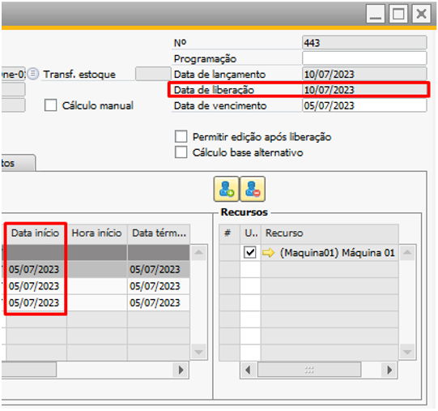{kind=link}
A seguinte mensagem será exibida ao usuário:
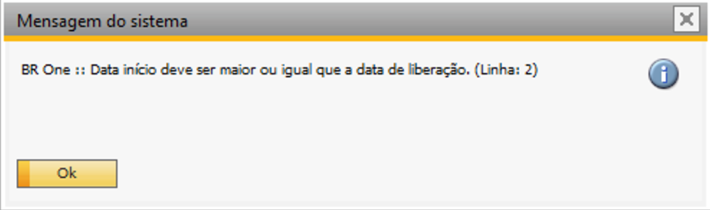{kind=link}
BR One :: Data início deve ser maior ou igual que a data de liberação. (Linha: x)
Quando este parâmetro estiver marcado, uma mensagem será exibida informando que a Ordem de produção (OP) possui datas incompatível e irá perguntar o que deverá ser feito. Caso o usuário escolha a opção “Sim”, apenas a linha informada será aceita. Caso ele escolha a opção “Sim p/ todos”, todas as linhas que possuírem datas incompatível serão aceitas. Caso escolha a opção “Não p/ todos”, nenhuma linha será aceita e nenhuma ação será executada.
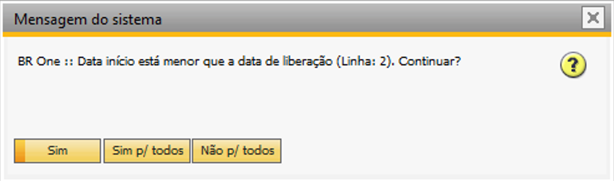{kind=link}
BR One :: Data início está menor que a data de liberação (Linha: x). Continuar?
Exibir alerta e não bloquear OP com data de término superior a data de vencimento
Quando este parâmetro estiver desmarcado, não será possível liberar uma Ordem de produção (OP) que contenha alguma linha cuja “Data término” seja superior a “Data de vencimento” da Ordem de produção (OP).
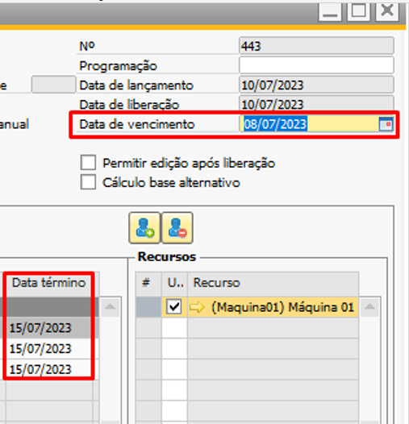{kind=link}
A seguinte mensagem será exibida ao usuário:
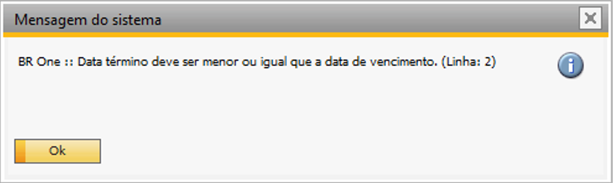{kind=link}
BR One :: Data término deve ser menor ou igual que a data de vencimento. (Linha: x)
Quando este parâmetro estiver marcado, uma mensagem será exibida informando que a Ordem de produção (OP) possui datas incompatível e irá perguntar o que deverá ser feito. Caso o usuário escolha a opção “Sim”, apenas a linha informada será aceita. Caso ele escolha a opção “Sim p/ todos”, todas as linhas que possuírem datas incompatível serão aceitas. Caso escolha a opção “Não p/ todos”, nenhuma linha será aceita e nenhuma ação será executada.
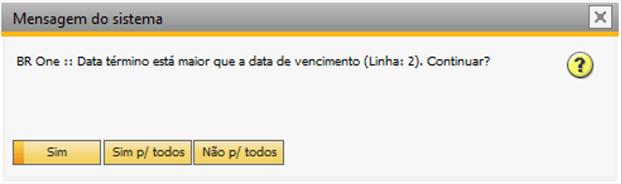{kind=link}
BR One :: Data término está maior que a data de vencimento (Linha: x). Continuar?
Não fechar OP sem apontamento de horas
Quando o parâmetro estiver desmarcado, as Ordens de produção (OP) poderão ser fechadas mesmo se não possuírem apontamento de horas para seus recursos.
No entanto, quando o parâmetro estiver marcado, não será possível fechar as Ordens de produção (OP) que possuam recursos sem apontamento de horas. A seguinte mensagem será exibida para o usuário:
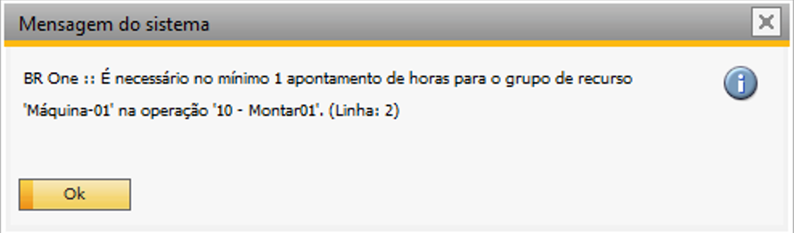{kind=link}
BR One :: É necessário no mínimo 1 apontamento de horas para o grupo de recurso “x” na operação “x”. (Linha: x)
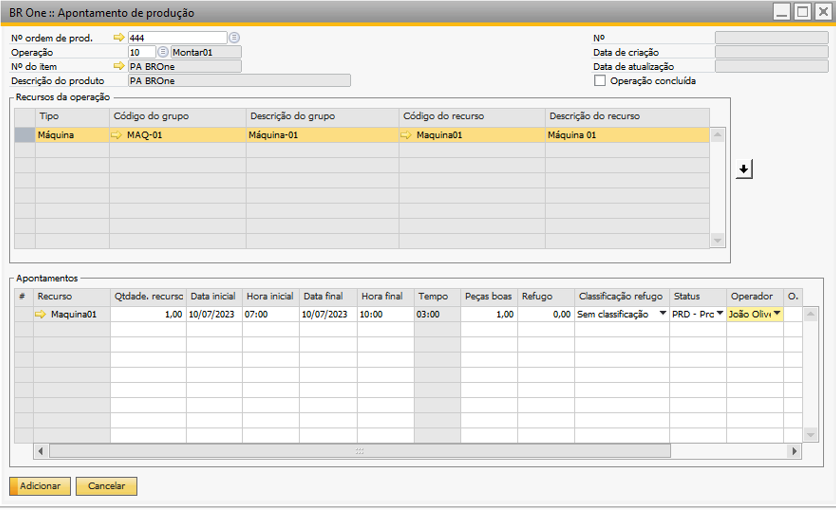{kind=link}
Não fechar OP sem apontamento de materiais
Quando o parâmetro estiver desmarcado, as Ordens de produção (OP) poderão ser fechadas mesmo se não possuírem apontamento de materiais.
No entanto, quando o parâmetro estiver marcado não será possível fechar Ordens de produção (OP) que não possuírem nenhum apontamento de materiais, ou seja, saída de insumos. A seguinte mensagem será exibida:
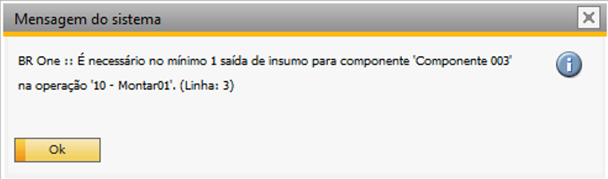{kind=link}
BR One :: É necessário no mínimo 1 saída de insumo para componente “x” na operação “x”. (Linha: x)
Não fechar OP sem apontamento de PA
Quando o parâmetro estiver marcado e ao fechar a Ordem de produção (OP) sem nenhuma entrada de Produto acabado (PA) e tenha saída de insumo realizada para OP, a seguinte mensagem será exibida:
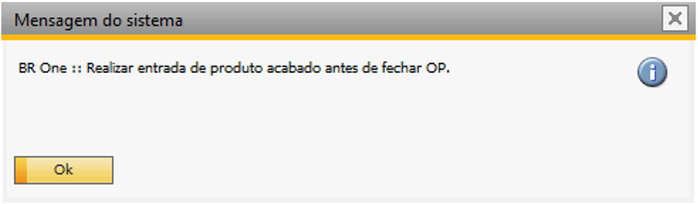{kind=link}
BR One :: Realizar entrada de produto acabado antes d fechar OP.
Quando o parâmetro estiver marcado e não houver entrada de produto acabado, o fechamento da ordem de produção será somente permitido se todos os insumos forem registrados como refugo na quantidade planejada da ordem de produção, ou seja, quando a ordem de produção for 100% refugada.
E para Ordem de produção (OP) de retrabalho, será validado se teve a entrada de PA ou a Reavaliação de estoque, pois a reavaliação de estoque é um processo da OP do tipo de retrabalho gerada na entrada de PA. Caso o parâmetro esteja desmarcado, a Ordem de produção (OP) poderá ser fechada normalmente.
Permitir vincular documentos de compras/OP/vendas fechados
Quando esse parâmetro estiver desmarcado, só será possível vincular à Ordem de produção (OP) documentos de compra, venda e outras Ordens de produção (OPs) que não estejam com status “Fechadas” (Essa opção é configurada como padrão. Dessa forma, se não for realizada nenhuma configuração para esse processo, será dessa maneira que irá proceder).
No exemplo abaixo, para o Ordem de produção (OP), o parâmetro “Permitir vincular documentos de compras/OP/vendas” estará desmarcado. Assim, será carregado apenas os “Pedido de compra” com status em “Aberto”.
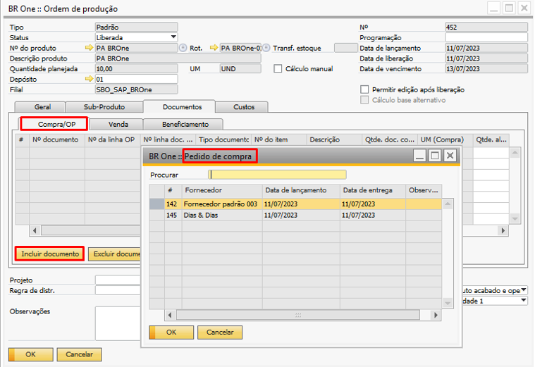{kind=link}
Com o parâmetro marcado, os documentos com status “Fechado” também poderão ser vinculados, como na imagem abaixo, os “Pedidos de compra” 143 e 144 estão fechados, e mesmo assim são carregados possibilitando ser selecionados.
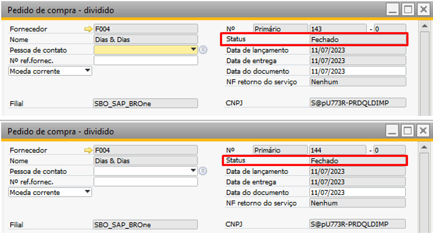{kind=link}
{kind=link}
Alertar ao encerrar OP com apontamentos pendentes
Com este parâmetro marcado, um alerta será exibido sempre que uma Ordem de produção (OP) for encerrada e possuir quantidades pendentes para apontamento (válido apenas para componentes).
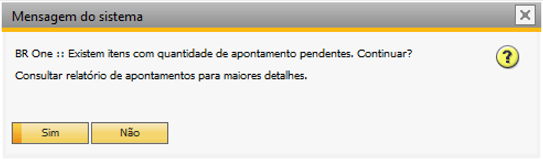{kind=link}
BR One :: Existem itens com quantidade de apontamento pendentes. Continuar? Consultar relatório para maiores detalhes
Na tela “BR One :: Relatório de apontamentos”, é possível verificar a quantidade pendente de cada linha da ordem de produção. Para acessá-lo, basta clicar com o botão direito do mouse e clicar na opção de “Relatório de apontamentos”.
Quantidade pendente = Qtde. planejada – Qtde. apontada - Qtde refugo.
As quantidades pendentes são calculadas apenas para componentes.
{kind=link}
Se for feito apontamentos com um item alternativo, o componente aparecerá sinalizado com (alternativo) e não será descontado da quantidade pendente, apenas quando houver saída de item da OP.
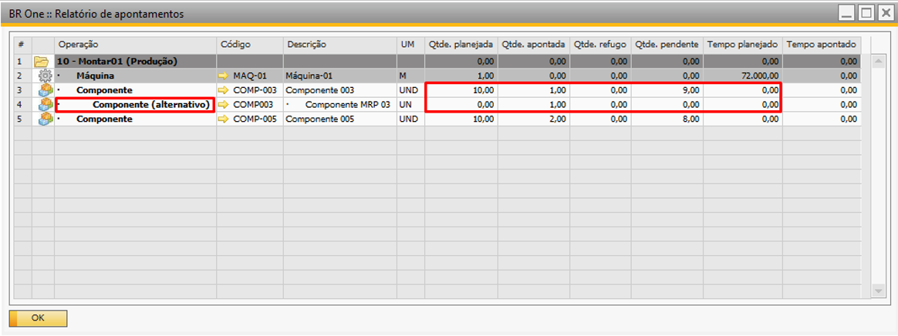{kind=link}
No exemplo acima, o item principal da Ordem de produção (OP) é o COMP-003. Ocorreu dois apontamentos para a Ordem de produção (OP), um com o item COMP-003 e o outro com o item alternativo COMP003. Para o item COMP-003 foi apontado 1 e para o COMP-003 foi apontado 1. Como o item original apontou apenas 1, a quantidade pendente ficou 9, ou seja, a quantidade pendente considera apenas os apontamentos dos itens principais da Ordem de produção (OP).
Permitir edição de OP após liberação
Na tela Ordem de produção (OP) foi criado a flag “Permitir edição após liberação”. Esta configuração permite editar as Ordens de produção (OPs) com status “Liberada”. Ao inserir uma nova Ordem de produção (OP), a flag virá marcada ou desmarcada, dependendo de como estará a configuração na tela “BR One :: Configurações de produção”.
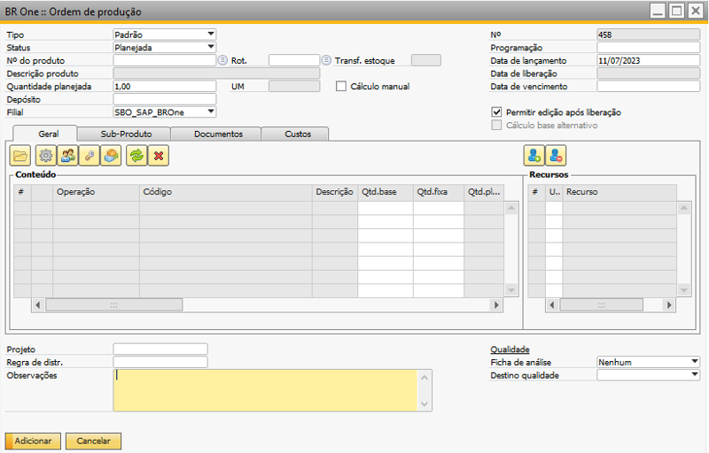{kind=link}
Obs.: As Ordens de produção (OPs) que foram criadas antes dessa configuração estarão com a flag desmarcada, podendo ser marcado a qualquer momento.
Todas as Ordens de produção (OPs) que forem criadas pelo MRP também virão com a flag marcada ou não, de acordo com a Configuração de produção. Se o usuário não tiver a autorização total e na tela “BR One :: Configurações de produção” a flag “Permitir edição de OP após liberação” estiver marcada, ele estará desabilitado e será permitido editar a Ordem de produção (OP) e cancelar linhas, apenas não poderá desmarcar a flag.
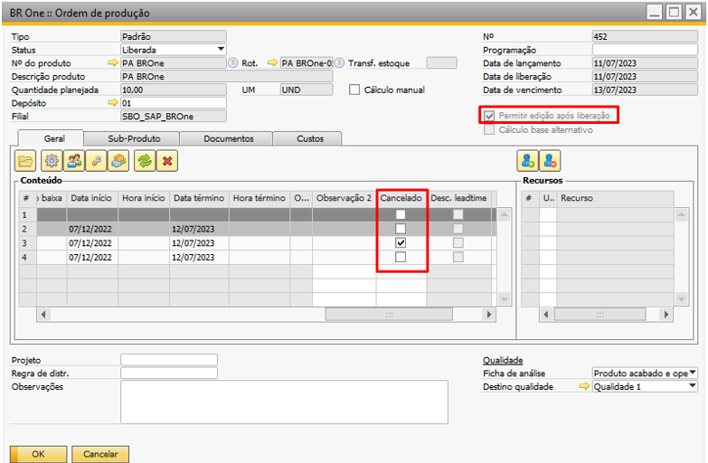{kind=link}
Se o usuário não tiver a autorização total e na tela “BR One Configurações de produção” o parâmetro “Permitir edição de OP após liberação” estiver desmarcada, apenas não poderá marcar a flag e a coluna “Cancelado” não aparecerá no grid, portanto, o usuário não poderá editar a Ordem de produção (OP) e nem cancelar linhas.
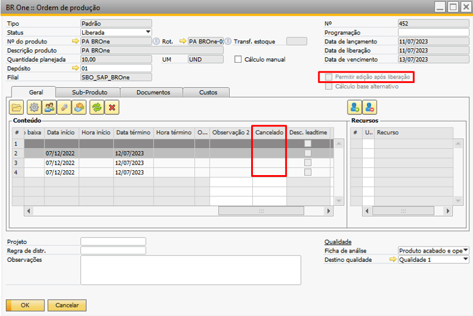{kind=link}
Ao editar uma Ordem de produção (OP) com status “Liberada”, será permitido inserir novos recursos apenas em novas operações. Para inserir novos componentes, é permitido inserir sem a necessidade de criar uma nova operação, mas, deve ser inserido sempre na última operação já criada.
A seguinte mensagem será exibida caso o usuário tente inserir um recurso em uma operação existente ou um componente em uma operação que não seja a última inserida:
{kind=link}
BR One :: Esta OP está liberada, só é permitido editar as operações que foram incluídas após a sequência x.
Realizar saída dos insumos com baixa manual ao fechar OP
Caso esse parâmetro esteja marcado, ao finalizar a Ordem de Produção (OP), todos os insumos que forem de “baixa manual” terão suas saídas automaticamente registradas, em quantidade equivalente às entradas do produto acabado realizado. Isso ocorre, independentemente de as entradas terem sido realizadas parcialmente para atender a várias demandas ou se foram feitas de uma única vez.
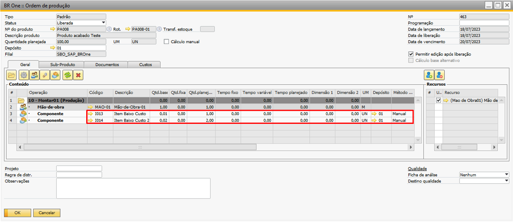{kind=link}
Após realizar a entrada de 40 unidades de Produto Acabado (PA), a Ordem de Produção (OP) será fechada. Ao fechar a OP, o sistema realizará automaticamente a saída dos insumos referentes aos dois itens marcados como “baixa manual” (I013 e I014). Ao final do processo, será exibida a tela “BR One :: Resultados do processo”, informando se foi realizada a saída corretamente.
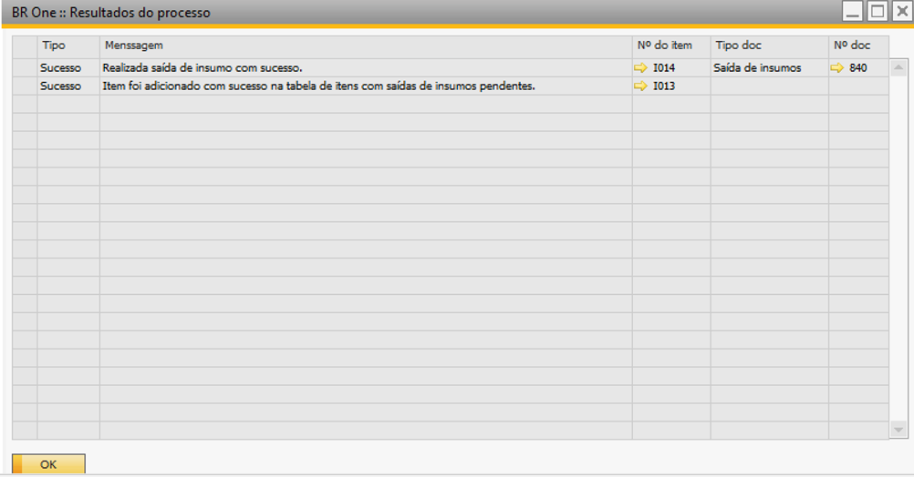{kind=link}
Para o item I014 foi realizada a saída de 0,8, pois a “Quantidade planejada” para o componente era 2,0 e como houve apenas a entrada de 40 itens para o item pai da Ordem de produção (OP), então foi realizada a saída da quantidade equivalente ((40100/100) 2/100 = 0,8). Nas observações é informada que a saída foi realizada ao fechar a OP.
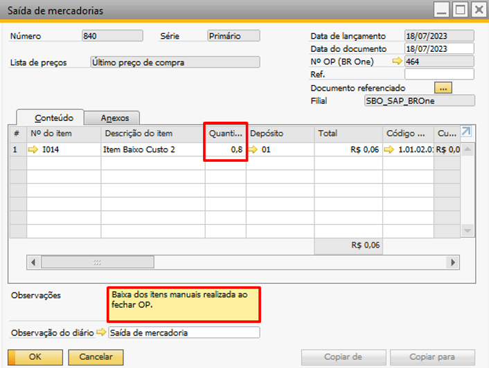{kind=link}
Para o item I013 não houve saída pois o custo do item foi menor que 0,0(0,1 0,01 = 0,01).
Os itens que estiverem como “Baixa por explosão” terão sua saída efetuada quando for realizada a entrada de PA. Porém, se ocorrer o erro de custo baixo, como no exemplo acima, a saída para esse item será ‘perdida’, e na baixa Manual, o item seria enviado para a tela “BR One :: Saída de insumos para itens de baixo custo” para acumular as quantidades dos insumos que tem custo muito pequeno, fazendo com que o custo acumulado supere 0,01 e assim seja possível realizar as movimentações no SAP.
Controlar alteração de status por usuário
Se o esse parâmetro estiver marcado, o BR One Produção passará a considerar as autorizações abaixo para validar se usuário pode ou não alterar o status de uma Ordem de produção (OP).
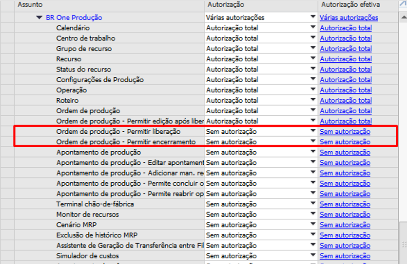{kind=link}
Para o funcionamento correto, a autorização “Desativar verificação de autorização do DI API” deve estar Sem autorização.
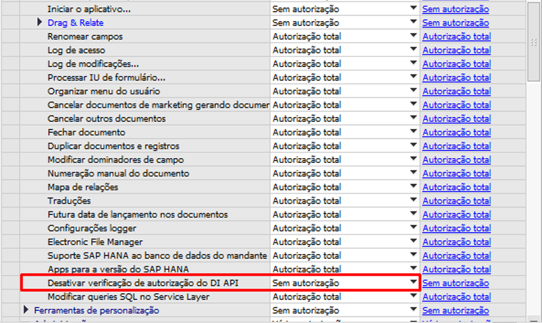{kind=link}
Se o usuário não possuir autorização e tentar liberar ou fechar uma OP (respeitando as respectivas autorizações), será exibida uma mensagem de erro, conforme exemplos abaixo:
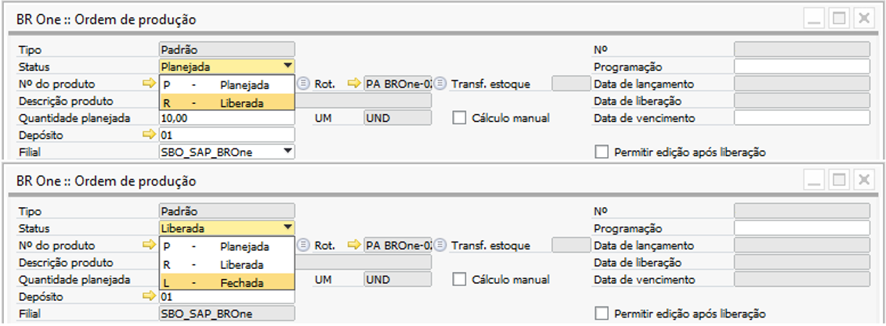{kind=link}
{kind=link}
BR One :: Usuário sem permissão para realizar esta ação.
A mesma regra á aplicada para a tela de manutenção de OPs.
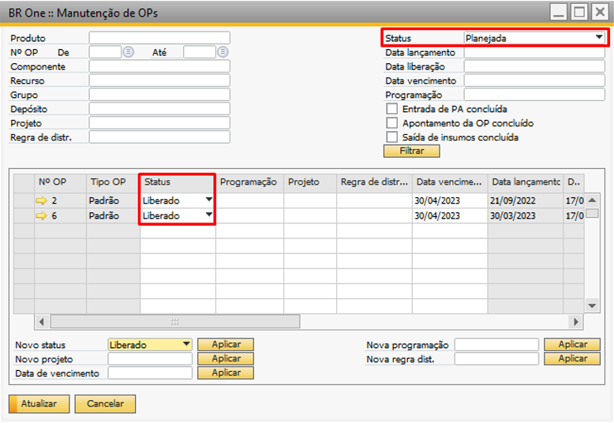{kind=link}
As mensagens serão exibidas no log de erros:
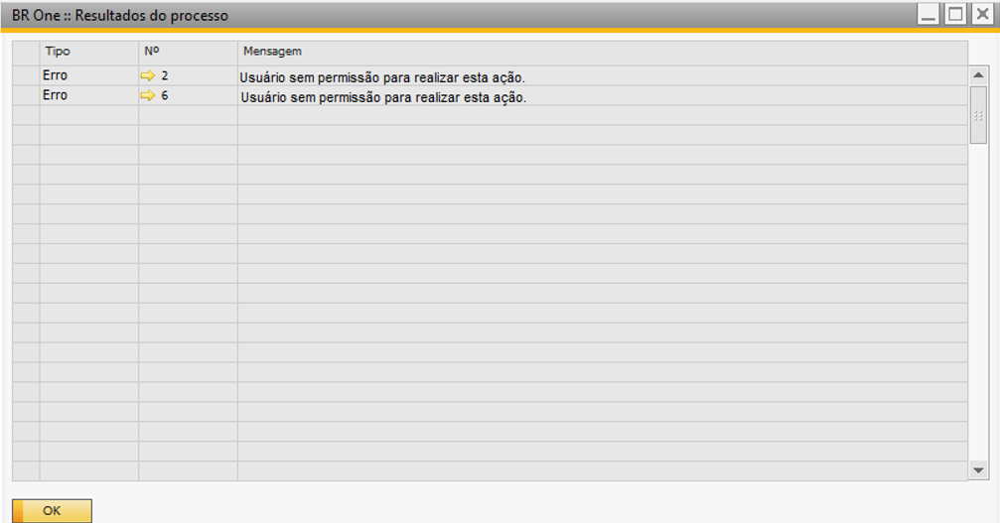{kind=link}
{kind=link}
As mensagens serão exibidas no log de erros:
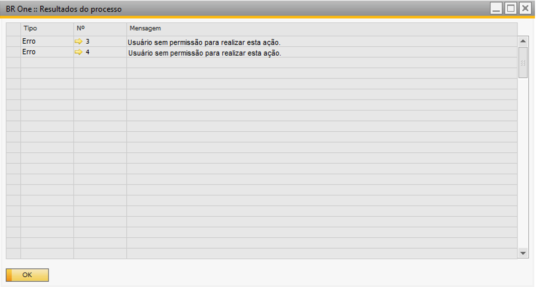{kind=link}
Conta contábil de desmontagem
Neste campo deve configurar uma conta contábil que será utilizada no fechamento das Ordens de produção (OP) do tipo Desmontagem. É importante destacar que, ao tentar adicionar uma nova Ordem de Produção (OP) sem ter configurado essa conta, o sistema impedirá o prosseguimento da operação.
Usuário adicional / Senha usuário
As informações inseridas nos campos “Usuário adicional” e “Senha usuário” serão referentes aos usuários que poderão realizar o fechamento da Ordem de produção (OP). Para efetuar o cadastro, o usuário informado deverá possuir licença do tipo “Financial” ou “Professional”. Caso tente inserir um registro de um usuário que não possua uma dessas licenças, será exibida a seguinte mensagem:
{kind=link}
BR One :: Não é possível efetuar cadastro. Nenhuma licença SAP.
O usuário informado também deverá possuir autorização para efetuar “Lançamento contábil manual”. Caso tente inserir um registro de um usuário que não possua essa permissão, será exibida a seguinte mensagem:
{kind=link}
BR One :: Não é possível efetuar cadastro. Usuário não possui autorização para realizar lançamentos contábeis.
O usuário informado também deverá possuir autorização para efetuar “Reavaliação do estoque”. Caso tente inserir um registro de um usuário que não possua essa permissão, será exibida a seguinte mensagem:
{kind=link}
BR One :: Não é possível efetuar cadastro. Usuário não possui autorização para realizar reavaliação do estoque.
O usuário informado dever ser um usuário já cadastrado no SAP. Caso tente cadastrar um usuário que não esteja cadastrado, será exibida a seguinte mensagem:
{kind=link}
BR One :: Não é possível efetuar cadastro. Usuário e/ou senha não cadastrados no SAP
Ao liberar OP Retrabalho gerar:
Deve ser configurado com documento sera gerado na liberação da OP para reserva dos itens retrabalhados.
Pode ser informado:
Pedido de transferência de estoque e tranferência de estoque.
Depósito retrabalho
É definido qual será o depósito utilizado no processo de retrabalho para reservar os itens.
Obriga vínculo de documento origem na OP de retrabalho
Com esse parâmetro marcado, ao liberar uma OP de retrabalho, na aba documento > Compras, deve realizar o vinculo da OP padrão do PA retrabalhado que possui a entrada de PA.
Caso o parâmetro esteja desmarcado não é necessário ter a OP padrão vinculada.
Obriga trocar os lotes do produto retrabalhado
Esse parâmetro só pode ser marcado caso o parâmetro Obriga vínculo de documento origem na OP de retrabalho estiver marcado.
Com esse parâmetro marcado, ao realizar a entrada de PA na OP de retrabalho, será realizado a saída do PA com o lote reservado e uma nova entrada de PA com o lote novo.
Caso o parâmetro esteja desmarcado não é obrigatorio realizar a troca de lote, assim mantendo o lote original do PA e apenas reavaliando o estoque.
Ocultar itens com quantidades zero, totalmente solicitadas
Com esse parâmetro marcado, os itens que tiverem quantidade zero não serão exibidos na tela. E com o parâmetro desmarcado, serão exibidos todos os itens, independentemente da quantidade.
Se esse parâmetro estiver marcado ou desmarcado, o estado atual será refletido na flag da tela “Pedido de transf. de estoque”.
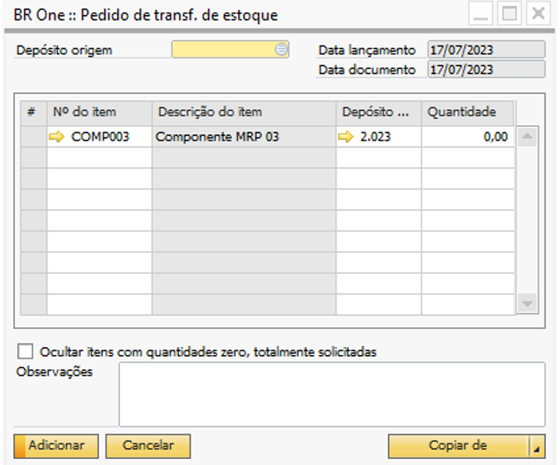{kind=link}
Caso essa a flag “Ocultar itens com quantidades zero, totalmente solicitadas” seja marcada/desmarcada, a seguinte mensagem será exibida:

BR One :: Ao marcar/desmarcar essa configuração, a tela será carregada. Continuar?
Ao clicar em “Sim”, a tela será recarregada. Ao clicar em “Não”, a tela não será atualizada.
Ocultar itens com quantidades zero, totalmente transferidas
Com esse parâmetro marcado, os itens que tiverem quantidade zero não serão exibidos na tela. E com o parâmetro desmarcado, serão exibidos todos os itens, independentemente da quantidade.
Se esse parâmetro estiver marcado ou desmarcado, o estado atual será refletido na flag da tela “Transferência de estoque”.
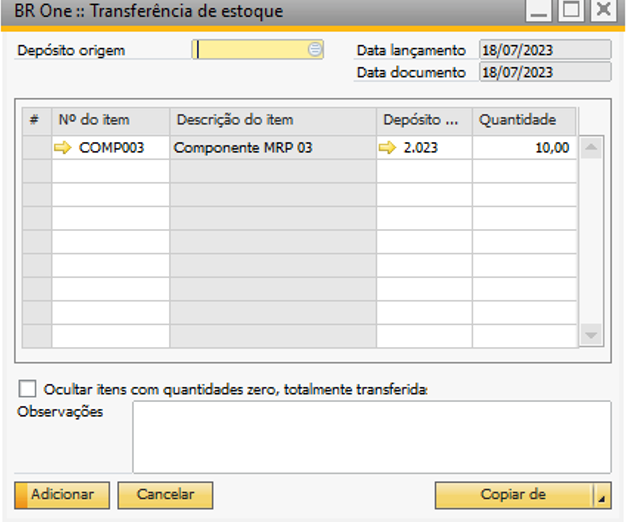{kind=link}
Caso essa a flag “Ocultar itens com quantidades zero, totalmente solicitadas” seja marcada/desmarcada, a seguinte mensagem será exibida:
BR One :: Ao marcar/desmarcar essa configuração, a tela será carregada. Continuar?
Ao clicar em “Sim”, a tela será recarregada. Ao clicar em “Não”, a tela não será atualizada.
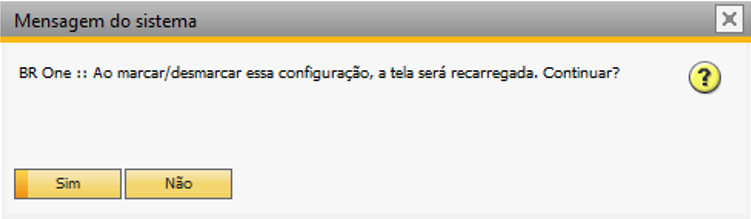{kind=link}
Considerar quantidade do grupo de recurso para o tempo planejado
Com o parâmetro “Considerar quantidade do grupo de recurso para o tempo planejado” marcado , o calculo irá considerar a quantidade de recursos que a Ordem de produção possui (OP). Essa regra será aplicada tanto para Ordens de produção Manual, Make to Order (Pedido de venda), MRP e Relatório de explosão.
No exemplo abaixo, temos a fórmula e como será realizado na Ordem de Produção (OP).
Tempo planejado = (((Tempo variável/Qtd cabeçalho Roteiro) * Qtd planejada cabeçalho OP) * Qtd base) + Tempo fixo.
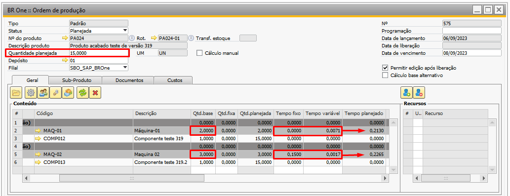{kind=link}
Quando o parâmetro “Considerar quantidade do grupo de recurso para o tempo planejado” estiver desmarcado, será considerado o seguinte calculo:
Tempo planejado = ((Tempo variável/Qtd cabeçalho Roteiro) * Qtd planejada cabeçalho OP) + Tempo fixo.
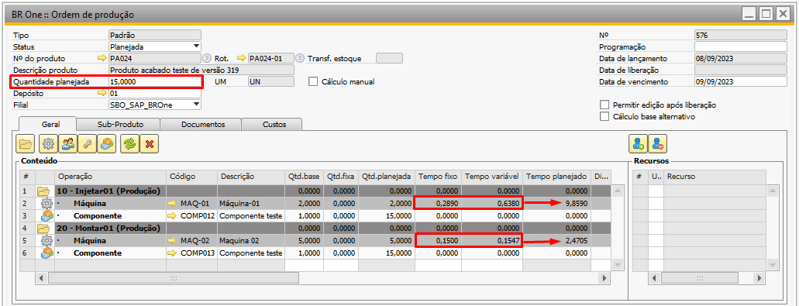{kind=link}
A configuração desse parâmetro influência diretamente nos cálculos realizados na OP durante sua adição, logo, esses cálculos são refletidos também no fechamento de custo configurado como previsto, e para o GGF que possuir rateio por horas.
Onde a fórmula utilizada no fechamento é:
Horas = ((Tempo planejado / Qtde planejada OP) * Qtde apontada) / 60.